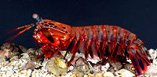
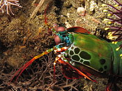
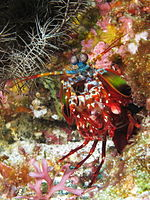

Fatos sobre o Stomatopoda
This is the eye of a mantis shrimp—an marine animal that’s neither a mantis nor a shrimp, but a close relative of crabs and lobsters. It’s a compound eye, made of thousands of small units that each detects light independently. Those in the midband—the central stripe you can see in the photo—are special. They’re the ones that let the animal see colour.
Odontodactylus scyllarus

Reino: Animalia
Filo: Crustacea
Classe: Malacostraca
Subclasse: Hoplocarida
Ordem: Stomatopoda
Família: Odontodactylidae
Género: Odontodactylus
Espécie: O. scyllarus
Nome binomial: Odontodactylus scyllarus.
outros fatos
Odontodactylus scyllarus vive em tocas que constrói nos fundos dos corais, ou através de buracos deixados por outros animais, em rochas e substratos próximos de corais de recifes a cerca de 40 metros de profundidade.[2] São capazes de desferir um dos mais rápidos e violentos golpes do reino animal, seu soco fora registrado com uma velocidade de 80 km/h e aceleração similar a uma arma calibre .22. A pressão exercida pelo soco é de 60 kg/cm².[3] Essa força esmagadora é a responsável pelo seu título de "lagosta-boxeadora" e é capaz de facilmente quebrar a carapaça de um caranguejo, as conchas duras e calcificadas de gastrópodes ou até mesmo quebrar o vidro reforçado de um aquário
links utilizados
veja o video do animal em ação aqui!